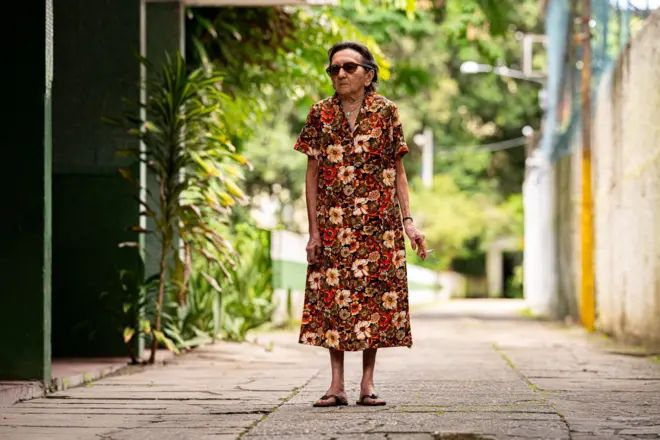

Approximately 50 Brazilian women abused at Epstein's mansion
Aproximadamente 50 mulheres brasileiras abusadas na mansão de Epstein
Marina Lacerda came forward in September 2025 to report being a victim of sexual violence by Jeffrey Epstein. Now, in an exclusive interview with BBC News Brasil, she reveals that many other Brazilian women may have suffered the same exploitation in Epstein's mansion.
Marina Lacerda veio a público em setembro de 2025 para relatar ter sido vítima de violência sexual por Jeffrey Epstein. Agora, em entrevista exclusiva à BBC News Brasil, ela revela que muitas outras mulheres brasileiras podem ter sofrido a mesma exploração na mansão de Epstein.
"At least around 50 Brazilian women, I think. I brought some of these girls, and they brought other girls."
"Pelo menos umas 50 brasileiras, eu acho. Eu levei algumas dessas meninas, e elas levaram outras meninas."
Marina Lacerda
Epstein died in a New York prison cell in August 2019 while awaiting trial on sex trafficking charges. His death came more than a decade after his first conviction for soliciting services from a minor.
Epstein morreu em uma cela de prisão em Nova York em agosto de 2019 enquanto aguardava julgamento por acusações de tráfico sexual. Sua morte ocorreu mais de uma década após sua primeira condenação por solicitar serviços de um menor.

Marina Lacerda tells BBC News Brasil her story
Marina Lacerda conta sua história à BBC News Brasil
From Queens to Manhattan
De Queens a Manhattan
Lacerda lived in Astoria, a neighborhood in Queens known for its large Brazilian community. She had arrived in the United States at age 8 and worked various jobs as a teenager, but the income was insufficient. "I was an immigrant and a minor," she recalls.
Lacerda morava em Astoria, bairro em Queens conhecido por sua grande comunidade brasileira. Ela havia chegado aos Estados Unidos aos 8 anos e trabalhou em vários empregos na adolescência, mas a renda era insuficiente. "Eu era imigrante e menor de idade", recorda.
She found a group of young Brazilian women connected to a church in Astoria. One day, one of them arrived with an invitation.
Ela encontrou um grupo de jovens mulheres brasileiras vinculadas a uma igreja em Astoria. Um dia, uma delas chegou com um convite.
"There's a super-rich, powerful guy who lives in Manhattan, and he likes to get massages from young girls."
Marina's friend, describing Epstein
"Tem um cara super-rico, poderoso, que mora em Manhattan, e gosta de pegar massagem de menina nova."
Amiga de Marina, descrevendo Epstein
Lacerda had briefly worked as a receptionist at a spa in Koreatown and had learned basic massage techniques. Her friend warned her to wear a bikini underneath. Despite finding the invitation strange, she agreed to go. She was 14 years old.
Lacerda havia trabalhado brevemente como recepcionista em um spa em Koreatown e havia aprendido técnicas básicas de massagem. Sua amiga a alertou para usar um biquíni por baixo. Apesar de achar o convite estranho, ela concordou em ir. Ela tinha 14 anos.
What happened in the mansion
O que aconteceu na mansão
The reality was very different from the story she had been told. "An employee picked me up, put us in an elevator, and we went to the third floor. We walked to a massage room with everything dark. The window was covered."
A realidade era muito diferente do que lhe tinham contado. "Uma empregada me pegou, colocou num elevador, e fomos até o terceiro andar. Andamos até um quarto de massagem com tudo escuro. A janela estava tampada."
Epstein asked where she was from, her age, and if she attended school. He spent much of the time on the phone. Then, according to Marina, he began touching her. When she refused and said she felt uncomfortable, her friend's demeanor changed dramatically.
Epstein perguntou de onde ela era, sua idade, e se frequentava a escola. Ele passou muito tempo ao telefone. Depois, de acordo com Marina, ele começou a tocá-la. Quando ela se recusou e disse que se sentia desconfortável, o comportamento de sua amiga mudou dramaticamente.
"Give it time and she'll feel comfortable with me."
"Dá um tempo que ela vai se sentir confortável comigo."
Epstein
Marina switched places with her friend. Epstein's behavior with the other girl became "super aggressive." The situation intensified rapidly. When it was over, they dressed, received money, and left.
Marina trocou de lugar com sua amiga. O comportamento de Epstein com a outra menina se tornou "super agressivo". A situação se intensificou rapidamente. Quando terminou, elas se vestiram, receberam dinheiro e saíram.

Getty Images
Getty Images
'You never made $300 in 40 minutes'
'Você nunca fez 300 dólares em 40 minutos'
When they left, Marina complained about what had happened. Her friend responded: "You never made $300 in 40 minutes." She threw the money at Marina's face and told her to stop complaining. The promise of financial help was powerful leverage. Marina returned multiple times.
Quando saíram, Marina reclamou sobre o que havia acontecido. Sua amiga respondeu: "Você nunca ganhou 300 dólares em 40 minutos." Ela jogou o dinheiro na cara de Marina e lhe disse para parar de reclamar. A promessa de ajuda financeira era uma alavanca poderosa. Marina voltou várias vezes.
Expanding the network: recruiting other girls
Expandindo a rede: recrutando outras meninas
After several visits, the situation escalated. "It started to become a mess. He started asking me to bring girls," Marina says. A friend who was being abused by her brother agreed to participate. From that point, Marina and this friend began recruiting other girls for Epstein.
Após várias visitas, a situação escalou. "Começou a virar uma bagunça. Ele começou a pedir para eu levar meninas," diz Marina. Uma amiga que estava sendo abusada por seu irmão concordou em participar. A partir daí, Marina e essa amiga começaram a recrutar outras meninas para Epstein.
"Girls who needed to work because they were immigrants, didn't have immigration documents, didn't have family. A lot of Brazilian girls, Russian, Hispanic. We brought several Brazilian girls, unfortunately."
"Meninas que estavam necessitando trabalhar porque eram imigrantes, não tinham documentos de imigração, não tinham família. Um montão de brasileiras, russa, hispânicas. Levamos várias brasileiras, infelizmente."
Marina Lacerda
She describes the vulnerability of immigrant girls: "A Brazilian arrives here and doesn't have documents. There's no way to make it in life. It's very difficult to be an immigrant here, especially a Brazilian woman who comes alone."
Ela descreve a vulnerabilidade das meninas imigrantes: "Brasileiro chega aqui e não tem documentos. Não tem como dar um jeito na vida. É muito difícil ser imigrante aqui, ainda mais brasileira quando vem sozinha."
Over time, Marina gained more freedom in the house. "He never said we were minors. He'd say he was getting massages from pretty, young girls." She also visited his office and he would give her money when she needed it.
Com o tempo, Marina ganhou mais liberdade na casa. "Ele nunca falava que éramos menores. Dizia que estava ganhando massagem de menina bonita, nova." Ela também ia ao seu escritório e ele dava dinheiro quando ela precisava.
"He was very manipulative. He always said he owned the government, owned banks."
Marina Lacerda
"Ele foi muito manipulador. Sempre falava para a gente que era dono de governo, de banco."
Marina Lacerda
Marina also reported an alleged episode of racism when she brought a Black Brazilian girl. "He got furious with me. Said I had to stop bringing dark-skinned girls. I think they didn't pay her."
Marina também relatou um suposto episódio de racismo quando trouxe uma menina brasileira negra. "Ele ficou puto comigo. Falou que tinha que parar de trazer menina escura. Acho que não a pagaram."
Over time, Epstein began complaining that Marina was bringing "old" girls and demanding younger ones. "I was already feeling very bad about bringing 15, 16-year-old girls."
Com o tempo, Epstein começou a reclamar que Marina estava levando meninas "velhas" e exigindo as mais jovens. "Eu já estava me sentindo muito mal de levar meninas de 15, 16 anos."

Getty Images
Getty Images
The scale of exploitation
A escala da exploração
Estimated Brazilian victims
Vítimas brasileiras estimadas
~50
Years of Marina's abuse
Anos de abuso de Marina
3 years
Marina's age at first visit
Idade de Marina na primeira visita
14 years
Testimony to the FBI
Depoimento ao FBI
Marina was contacted by the FBI in 2008. She was frightened and didn't fully cooperate. "They were very aggressive with me. They came asking to speak with me, saying I had to talk to them, that there was a case with Epstein. I had no idea what was happening."
Marina foi contatada pelo FBI em 2008. Ela estava assustada e não cooperou plenamente. "Eles foram muito agressivos comigo. Chegaram pedindo para falar comigo, dizendo que eu tinha que falar com eles, que havia um caso com Epstein. Eu não tinha ideia do que estava acontecendo."
She called one of Epstein's secretaries, who told her a lawyer would help her. She was instructed never to call that number again.
Ela ligou para uma secretária de Epstein, que lhe disse que um advogado a ajudaria. Ela foi orientada a nunca mais ligar para aquele número.
"I was very afraid, I didn't tell everything. The lawyer wasn't for me, it was for Epstein, to protect him."
"Fiquei com muito medo, não contei tudo. O advogado não era para mim, era para o Epstein, para proteger ele."
Marina Lacerda
In 2019, the FBI contacted her again. This time, she decided to speak more openly. Epstein died that same year in prison.
Em 2019, o FBI a contatou novamente. Desta vez, ela decidiu falar mais abertamente. Epstein morreu naquele mesmo ano na prisão.

Reuters
Reuters
Breaking silence: from victim to advocate
Quebrando o silêncio: de vítima a ativista
In September 2025, Marina came forward publicly for the first time. She gave an interview to ABC News and participated in a press conference with eight other women accusing Epstein. The event called for full disclosure of case documents in front of the U.S. Congress in Washington.
Em setembro de 2025, Marina veio a público pela primeira vez. Ela deu uma entrevista à ABC News e participou de uma coletiva com outras oito mulheres acusando Epstein. O evento pediu a divulgação completa de documentos do caso em frente ao Congresso dos EUA em Washington.
From that moment, she decided to expand her advocacy. She created Instagram and TikTok pages and hired someone to help manage content. Her goal is to raise awareness about physical and psychological abuse.
A partir daí, ela decidiu expandir seu ativismo. Criou páginas no Instagram e TikTok e contratou alguém para ajudar a gerenciar conteúdo. Seu objetivo é conscientizar sobre abuso físico e psicológico.
"After I broke my silence, I haven't stopped. I opened platforms and started speaking on podcasts. I talk about how to teach our children to say no."
Marina Lacerda
"Depois que quebrei meu silêncio, eu não tenho parado. Abrir plataformas e comecei a falar em podcasts. Falo de como ensinar nossas crianças a falar não."
Marina Lacerda
However, her public testimony has brought criticism on social media. "People attack, saying I stayed, that I went back. Why do you think other Brazilian [victims of Epstein] don't want to say anything? Family will attack."
Porém, seu testemunho público trouxe críticas nas redes sociais. "As pessoas atacam, dizendo que fiquei, que eu voltei. Por que acha que outras brasileiras [vítimas de Epstein] não querem falar nada? A família vai atacar."
Her family in Brazil questioned her motives, believing there was some political agenda. She emphasizes she has no interest in Brazilian or American politics.
Sua família no Brasil questionou seus motivos, acreditando haver alguma agenda política. Ela enfatiza que não tem interesse na política brasileira ou americana.
Marina reports receiving constant messages from other Latina women who were abused but fear speaking publicly due to similar criticism and stigma.
Marina relata receber mensagens constantes de outras mulheres latinas que foram abusadas mas temem falar publicamente devido à crítica e estigma semelhantes.
BBC News Brasil
BBC News Brasil
A testimony long overdue
Um testemunho muito tempo esperado
Marina's account provides unprecedented insight into the Brazilian victims connected to Epstein and the systematic nature of his exploitation. Her story illuminates the vulnerability of immigrant women and girls, their susceptibility to manipulation, and the networks of exploitation that crossed borders.
O relato de Marina oferece perspectiva sem precedentes sobre as vítimas brasileiras conectadas a Epstein e a natureza sistemática de sua exploração. Sua história ilumina a vulnerabilidade de mulheres e meninas imigrantes, sua suscetibilidade à manipulação, e as redes de exploração que cruzaram fronteiras.
"I would have felt much better today if I could have spoken in 2008."
Marina Lacerda
"Eu teria me sentido muito melhor hoje se eu pudesse ter falado em 2008."
Marina Lacerda
That moment has passed. But her courage in speaking today may help protect others and bring justice to the many women whose voices were silenced.
Aquele momento passou. Mas sua coragem em falar hoje pode ajudar a proteger outras pessoas e trazer justiça para as muitas mulheres cujas vozes foram silenciadas.